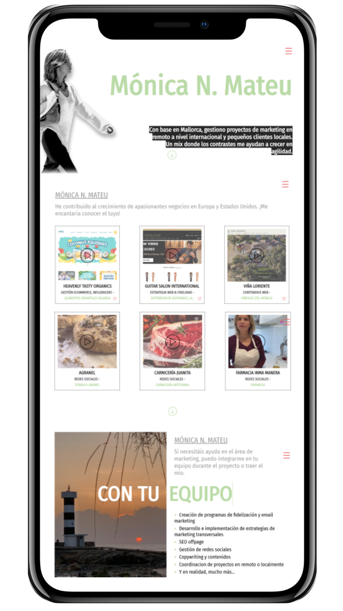
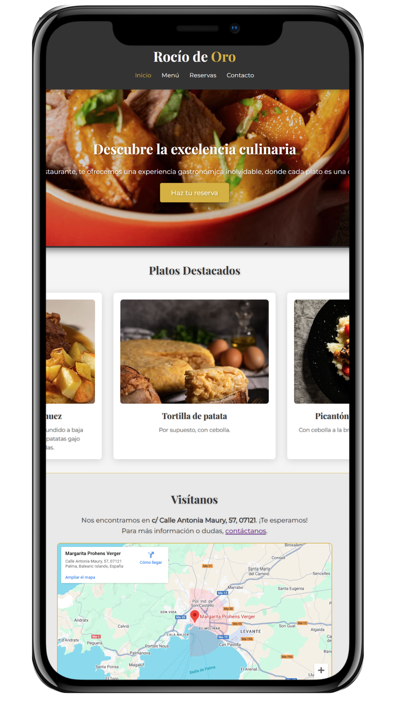

Proyects & Deployments
These are some of my projects and developments.
It includes personal work and projects created for businesses and real clients.
Rocio de Oro

These are some of my projects and developments.
It includes personal work and projects created for businesses and real clients.
Passionate developer and creative thinker, always striving to innovate and build new solutions.
Delving into the world of artificial intelligence and its potential to transform digital projects.
These are my studies, my journey that has made me who I am today.
Website Application Development
CFGS Superior Degree | 2022-Actual
Cesur
Bachelor Degree
Ies Sant Marçal | 2020-2022
Secondary Degree
Ies Sant Marçal | 2015-2022
Feel free to reach out if you have any questions, inquiries, or would like to collaborate.
You can contact me through the following channels: